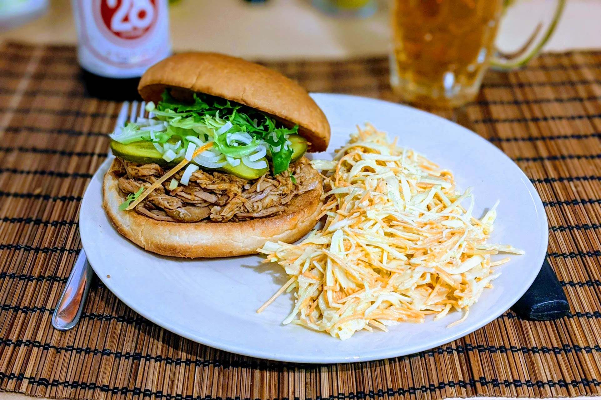

Porc effiloché

Ici en burger avec de la [salade de chou](SaladeDeChou.html).
Pour 4 personnes :
- 1.2kg d'épaule de porc (sans os)
- Un verre de sauce barbecue
- Un verre de jus de pomme (ou de cidre)
- Une cuillère à soupe d'origan
- Deux oignons
- Quatre gousses d'ail
- Deux ou trois cuillères à soupe de paprika (fumé de préférence)
- Sel, poivre, huile d'olive
- Éplucher et émincer les oignons, les faire revenir dans de l'huile d'olive. Écraser l'ail, les rajouter dans l'huile d'olive, enlever le tout dès que ça commence à dorer.
- Pendant ce temps, saler et poivrer le porc généreusement, en frottant de tous les côtés pour que ça s'accroche à la viande. Faire pareil avec le paprika, il faut que ça soit bien rouge de tous les côtés.
- Mélanger les oignons, l'ail, la sauce barbecue, le jus de pomme et l'origan. Disposer une partie de la sauce au fond d'une mijoteuse, ajouter le porc dessus, recouvrir de sauce. Faire mijoter au moins 8 heures (mais on peut laisser plus sans aucun problème) au réglage doux.
- Séparer la viande et le jus de cuisson, laisser refroidir à l'air puis au frigo quelques heures. Puis, enlever le gras solidifié du jus de cuisson, et effilocher la viande à la main.
- Avant de servir, refaire chauffer doucement la viande mélangée au liquide dégraissé. Déguster par exemple dans un burger ou un sandwich, avec des frites ou de la salade de chou.
Remarque : on peut garder le gras, et par exemple l'utiliser pour faire cuire une poêlée de légumes.